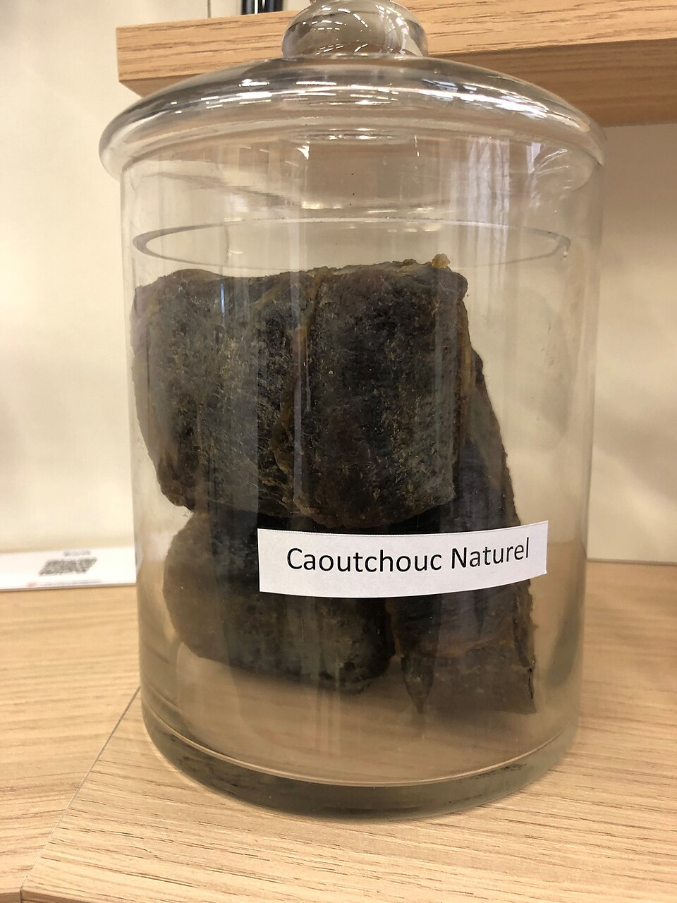
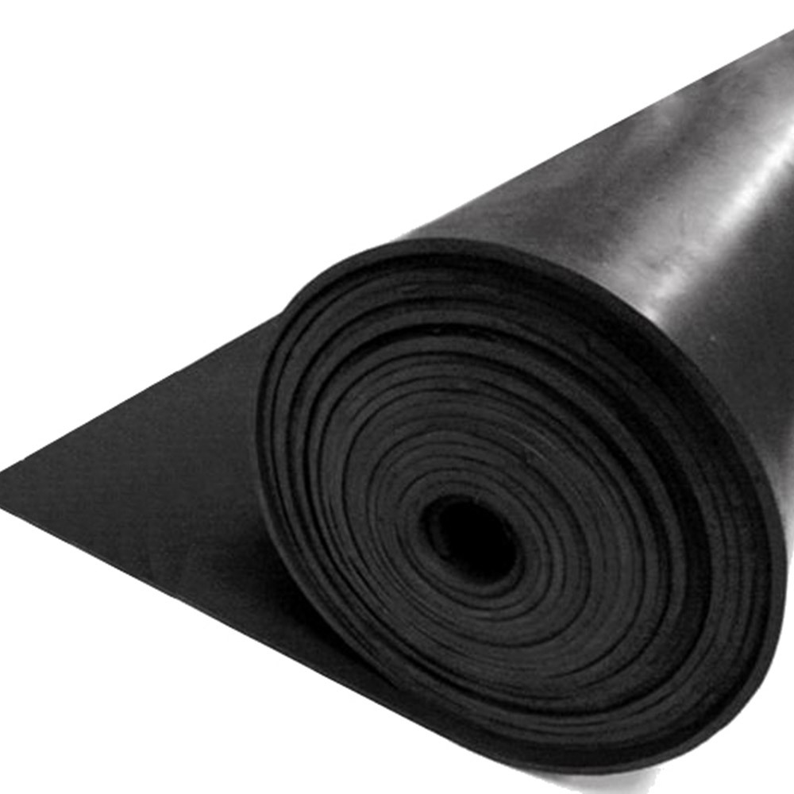
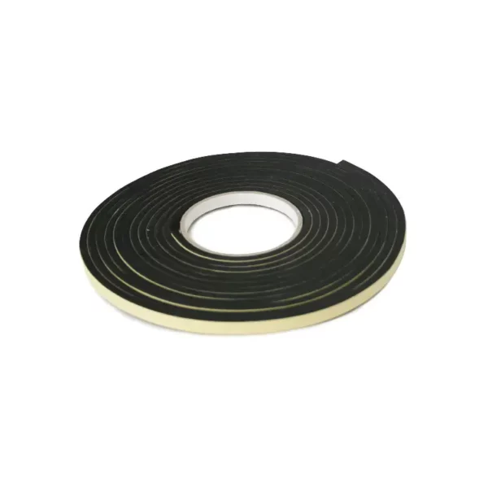
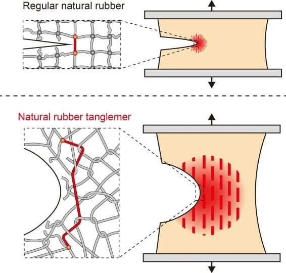
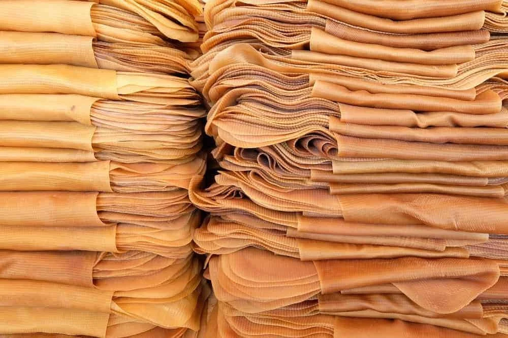

Material properties
How strong, flexible, durable, and water-resistant are they?
Material Science Presentation
Two types of rubber, two very different ways of making useful materials. Let's see how they compare.


By Mahdi
01 / Introduction
Both materials are types of rubber, but they aren't made the same way. We'll compare what makes each one useful and where each one has its disadvantages.
How strong, flexible, durable, and water-resistant are they?
How are they produced, and what raw materials are needed?
Where do we encounter these materials, and how do they affect society and the environment?
Which one is more beneficial overall, and what makes it the better choice?
02 / The Basics
The biggest difference is where they come from: natural rubber comes from plants, while neoprene is manufactured through chemical processes.
Natural rubber is mainly made of a polymer called cis-1,4-polyisoprene.
It comes from latex collected from rubber trees, which is then processed into usable rubber.
Neoprene is a synthetic rubber also known as polychloroprene.
It is made by chemically joining many chloroprene molecules into long polymer chains.

A small distinction: polyisoprene can also be manufactured synthetically. Here, we're comparing neoprene with naturally sourced polyisoprene.
03 / Material Properties
Natural rubber is especially good at stretching and returning to its original shape. That's one reason it's used in so many everyday products.

04 / Material Properties
Neoprene is useful when rubber needs to handle tougher conditions. It gives up some of natural rubber's standout elasticity in exchange for other advantages.
Neoprene's exact properties depend on its formulation and whether it is solid rubber or foam.
05 / Everyday Applications
Their different properties make them useful for different jobs. One is especially good at elasticity, while the other is useful in harsher environments.

06 / Manufacturing
Natural rubber starts as latex, a milky liquid collected from rubber trees. It goes through several steps before becoming the rubber used in products.
Small cuts are made in the tree bark so latex can flow out.
The latex is collected in containers.
The latex is processed so the rubber separates into a solid mass.
The rubber is washed, rolled, and dried.
Ingredients are mixed in and the rubber is shaped into products.
07 / Manufacturing
Neoprene doesn't come directly from a plant. It is manufactured by producing chloroprene and joining its molecules together through polymerization.
Butadiene and chlorine are used to produce chloroprene.
Chemical processing creates the chloroprene monomer.
Many monomers join into long polychloroprene chains.
The polymer is processed into materials for different products.
Even though neoprene is synthetic, its production still depends on resources taken from the environment.
08 / Social Impact
Both materials make useful products possible, but they contribute to society in different ways.
09 / Environmental Impact
Neither material is completely harmless to the environment. Their impacts depend on how they're produced, used, and disposed of.
Responsible sourcing, cleaner manufacturing, and better waste management can help reduce the impact of both materials.
10 / Side-by-Side Comparison
Here's a quick look at where each material performs best.
| Property | Natural Rubber | Neoprene |
|---|---|---|
| Elasticity | Excellent | Good |
| Tensile strength | Very high | Good to high |
| Water resistance | Good | Good |
| Oil resistance | Limited | Very good |
| Weather and ozone resistance | Lower | Very good |
| Renewable feedstock | Yes, when responsibly grown | Generally no |
| Main advantage | Elasticity and resilience | Oil and weather resistance |
These are general comparisons. Actual performance depends on the specific rubber formulation and product.
11 / Visual Comparison
These ratings give a general idea of how the two materials compare. A higher score means better performance in that category.
These are illustrative qualitative ratings, not laboratory measurements. Real performance varies depending on the formulation.
12 / Final Verdict
My overall choice would be natural rubber, as long as it is responsibly sourced.
My conclusion: natural rubber is more beneficial overall, but neoprene is the better choice for certain demanding applications.
13 / References
These sources helped me understand the chemistry, production, uses, and environmental effects of natural rubber and neoprene.
Explains natural rubber and synthetic rubber chemistry.
Read the OpenStax chapterInformation about chloroprene, neoprene production, properties, and uses.
Read the NIOSH documentBackground information about chloroprene and its industrial uses.
Read the background documentInformation about polychloroprene manufacturing and industrial emissions.
Read the EPA reportThank you for listening!(AI was used for formatting thats why this was done quickly instead of me fighting over javascript saying error on line 55 when its actually on line 4)